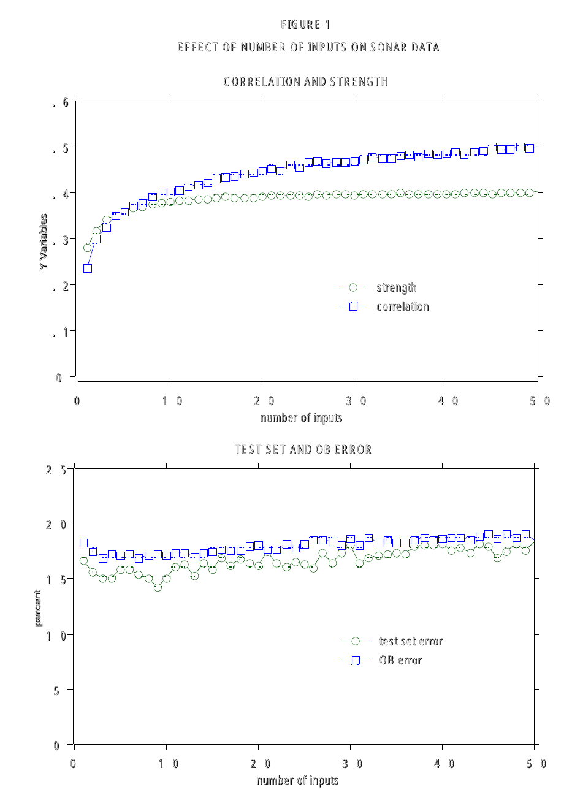

On this page
Twenty questions, then a forest.
You know twenty questions. I think of something, you ask yes-or-no questions, and each answer cuts the possibilities down until one is left. A decision tree is that game played by a machine, except the machine picks the questions with math instead of gut feeling.
Each question is a threshold on one feature: is petal width above 1.3? Is x1 to the left of 0.5? Answer yes, go right. Answer no, go left. At the bottom of every path sits a leaf, and the leaf just votes for whatever class showed up most in its corner of the data. Here is the shape of it, using the Iris root split from the notebook this page follows:
Every internal node is one yes-or-no question about a single feature. Every leaf is a majority vote of the training points that landed there. Deeper tree, more questions, finer carving.
So how does the machine pick the questions? It tries every feature and every threshold, and keeps the split that makes the children purest. "Purest" needs a number, and there are two classics.
Entropy is surprise, measured in bits:
A 50/50 node has $H = 1$ bit, maximum surprise. A pure node has $H = 0$, no surprise at all. Information gain is just surprise destroyed: $H(\text{parent})$ minus the size-weighted $H$ of the children. Work it once: a parent with 50 of each class ($H = 1$) splits into a 40/10 child and a 10/40 child. Each child has $H = -(0.8 \log_2 0.8 + 0.2 \log_2 0.2) = $ $0.7219$, so the gain is $1 - 0.7219 = $ $0.2781$ bits. Splits that separate the classes score high. Splits that do nothing score zero.
Gini impurity is the lazy cousin, no logarithms:
Read it as: pick two points from the node at random; gini is the chance they disagree. For 50/50 that is $1 - 0.25 - 0.25 = $ $0.5$. For a pure node it is $0$. The notebook this page follows computes both by hand on Iris: petal width wins the root split, and the size-weighted gini of its two children comes out to $0.443$. Same idea as entropy, cheaper arithmetic, and in practice the trees come out nearly identical.
Then the tree recurses: split the children, split the grandchildren, until a max depth or until every leaf is pure. And here is the gotcha the notebook demonstrates next. A tree with max depth 125 on 2D data keeps splitting until it has memorized the training set, drawing a jagged boundary that tiptoes around every noisy point. The notebook's tree lands at 87.6% test accuracy. It learned the noise. The next two tools are the two cures.
Cure one: do not trust one tree. Grow twenty, each on a bootstrap resample of the data (same size, drawn with replacement, so each tree sees a slightly different dataset), each capped at a max depth. Then let them vote. One tree's jagged memorization is random; the average of twenty jagged memorizations is smooth. The notebook's forest of 20 trees at depth 5 beats its single deep tree on test data, 89.0% vs 87.6%, and the boundary visibly relaxes.
Both sliders below train real trees live in your browser on 400 synthetic 2D points (four blobs, two per class, the same recipe as the notebook's data). Nothing is precomputed: drag a slider and the forest retrains. The numbers are the tool's own, computed live on its own held-out test set, not copied from the notebook.
How to play
Cure two is the opposite philosophy. A forest grows its trees independently and averages them. Boosting grows its trees in sequence, and each new tree is hired for one job: fix the last round's mistakes.
The recipe, straight from the notebook. Start with the dumbest possible prediction, the mean of the labels. Compute the residuals, truth minus prediction, the signed mistakes. Fit a small tree (depth 3) to the residuals, not the labels. Nudge the prediction toward the tree's output with a small learning rate, and repeat. In symbols:
Each round the boundary corrects itself exactly where it is still wrong, and the residual field shrinks. The notebook runs 100 rounds at $\eta = 0.01$ with depth-3 trees and lands at 82.7% test accuracy. Below, the same algorithm trains live: the halos are the current residuals, red where the model under-predicts, blue where it over-predicts, fading as each round eats them.
How to play
Leo Breiman, "Random Forests," Machine Learning 45(1), 5-32, 2001. This is the paper that named the algorithm: the forest votes, and the votes each tree never saw become a free test set. "The top graph of Figure 1," Breiman writes, "plots the values of strength and correlation vs. F." Below is the real figure, straight from the paper, with its original caption. Tap the numbered markers to tour it; on Play, the out-of-bag error curve gets traced marker by marker.

Rebuilt from Figure 1 of Breiman, L. "Random Forests." Machine Learning 45(1), 5-32, 2001. PDF
How to play
You now own both cures for the memorizing tree. Forests average away the jaggedness with independent trees. Boosting hunts down the remaining mistakes with sequential ones. Different philosophies, same lesson: a crowd beats a lone genius.
But step back and look at what the trees are doing. Every question is a wall: x1 left of here, x2 below there. The boundary is a patchwork of rectangles, and the tree never asks how confident it is, only which side. What if the question is not which side of the wall, but how confident the boundary is? How far is each point from the line, and can we make that distance as large as possible? That is a support vector machine. Next: Support Vector Machines.